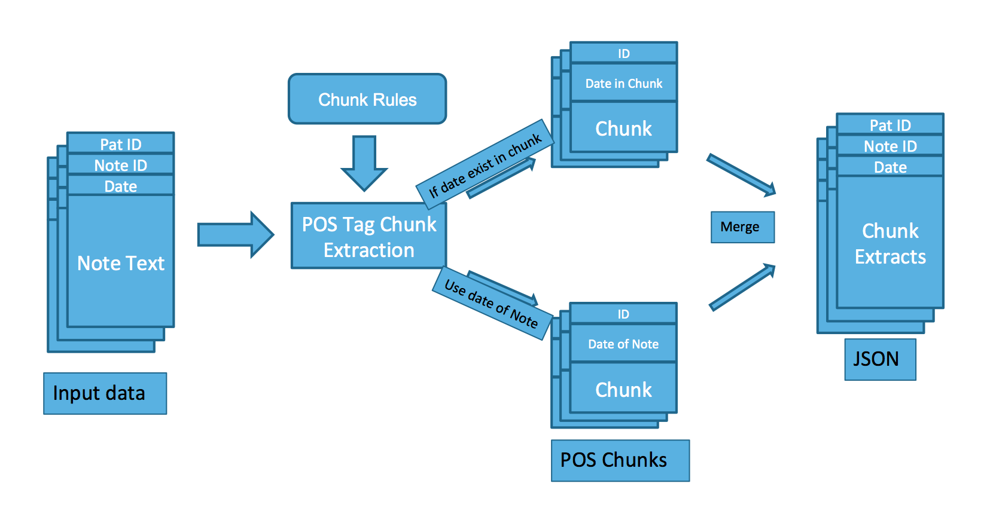

Objectives
Clinical event extractions over patient’s timeline
Staging - whether metastasis
e.g. T1[a,b,c], T3[a,b], metastatic CRPC
Gleason score - cell differentiation
e.g. gleason 3+3=6, gl 3+4=7
PSA level
e.g. PSA is 14, PSA 3
Medication
e.g. Hormone therapy -> Leuprolide, Lupron
e.g. Chemotheropy -> Docetaxel, Novantrone
Pathway grouping for pattern exploration
At word level
At sentence level
Challenges
Highly unstructured notes
Direct keyword extraction is difficult
Regular expressions fail to capture keywords along with context
- e.g. Rule ‘PSA [digit][digit].[digit]’ can capture `PSA 10.8’ but cannot capture sentences such as ‘PSA on 12/2015 was 9.0’
Lack of labelled data
Cannot train a classification model
Pos Tagging Method
Parts Of Speech Tagging
Extension to tag words such as medications, dates, indexes as tags
e.g. replace Lupron’s tag NOUN with MEDICINE, CD with DATE
- Sentence: started Lupron on 7/8/14
- POS Sentence: ('started', 'VBD'), ('lupron', ‘NN'), ('on', 'IN'), ('7/8/14', 'CD')
- Modified POS Sentence: ('started', 'VBD'), ('lupron', 'MEDICINE'), ('on', 'IN'), ('7/8/14', 'DATE')
POS tag chunking rules for each clinical event
ON_DATE: extract events occurring on a given date
- ('started', 'VBD'), ('lupron', 'MEDICINE'), ('on', 'IN'), ('7/8/14', 'DATE')
- ('PSA', 'PSA'), ('on', 'IN'), ('02/12/2008', 'DATE'), ('was', 'VBD'), ('10', 'CD')
PRESENT: extract events occurring at present – specific to date of note
- ('continues', 'VBZ'), ('on', 'IN'), ('xofigo', 'MEDICINE')
- ('PSA', 'PSA'), ('is', 'VBZ'), ('10', 'CD')
Pos Tagging Results
System Design

Patient Note Timeline
Keyword Extraction
Patient Pathway
Medications on Admission/Discharge
Word Similarity
Time to Development of Metastatic Disease
- Important for physicians to understand when metastasis happened
Embedding
- Numerical representation for words or sentences
- Allows performing arithmetic operations on words/sentences and similarity calculations
- Similar words/sentences are closer in space

Sentence Similarity
Sentences similar to ‘revealed metastatic disease’